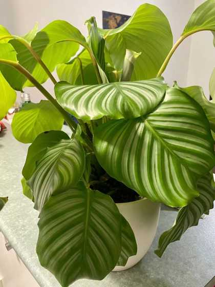
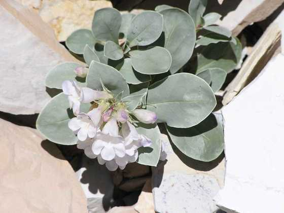
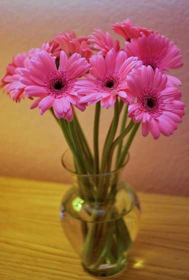
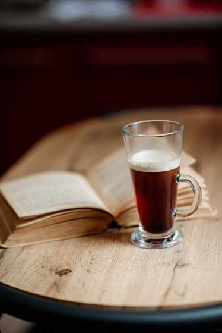

福岡県飯塚市高田のカフェ
コーヒー一杯ぶんの、
ちいさな楽園へ。
緑と光のそばで、ひと息つく。EDEN TO CAFEは、そんな時間を過ごすためのカフェです。
お店のこと
名前に重ねた「楽園」のイメージ。
EDEN(エデン)は「楽園」を連想させる言葉です。店名の由来についてお店からの説明は確認できていないため、「緑や光に囲まれた、くつろげる場所」という雰囲気は制作側のイメージです。このページはそのイメージから、植物の緑と木のぬくもりを基調に作っています。
確認できたのは、福岡県飯塚市高田にあるカフェで、Instagramで写真を発信していることです。オーナーの想いやメニューの詳細は確認できていないため、掲載していません。
上記の事実はInstagramの店舗プロフィールによります。それ以外は制作側の表現です。




メニュー
あたたかい一杯と、やすらぐ時間。
お店のメニューの詳細は確認できていないため「準備中」としています。下記は雰囲気をお伝えするイメージの写真です。


口コミ
こんなひとときになりそうです。
イメージ例
以下は制作側が創作したイメージ例で、実在の声ではありません。
緑がたくさんあって、入った瞬間に肩の力が抜けました。(イメージ例)
窓の光がきれいで、本を読みながら長居してしまいそうな席でした。(イメージ例)
コーヒーの香りがよくて、また寄りたくなるお店です。(イメージ例)



アクセス
ご案内
| 所在地 | 〒820-0079 福岡県飯塚市高田1679-2 |
|---|---|
| 電話 | 準備中 |
| 営業時間 | 準備中 |
| 定休日 | 準備中 |
| @edentocafe |
営業時間・メニュー・価格は変更されることがあるため、最新情報はInstagramをご覧ください。